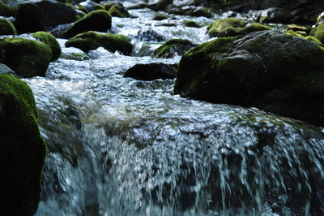
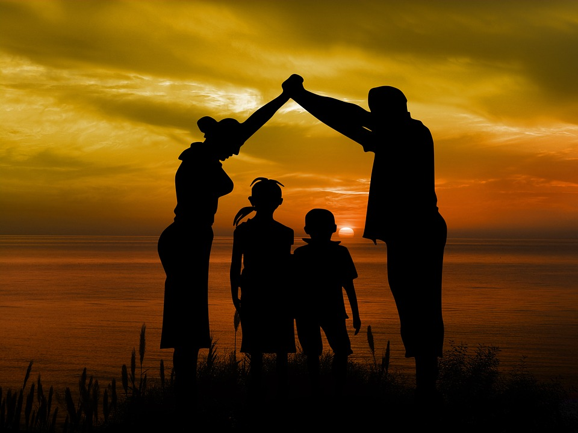

About Us
Why choose us

We've been on the water longer than most. Born from a deep love of moving currents and wild places, our team has spent years guiding people through some of the most breathtaking river landscapes around. We believe that the best experiences happen when you step outside the ordinary and nothing does that quite like a river.
Whether you're a first-timer looking for a taste of adventure or a seasoned paddler chasing something bigger, we meet you where you are. Our guides bring experience, enthusiasm, and a genuine passion for the outdoors to every trip we run.
It all started with Dale Jhonson, who first paddled these waters as a teenager in the summer of 1987 and never quite found his way back to dry land. What began as a personal obsession quietly grew into something bigger when he and his wife Karen converted an old riverside barn into the operation's first base camp in 1994. Today, their two sons, Marcus and Tyler, run the day-to-day, with Marcus handling logistics and Tyler leading trips on the water just like his dad once did. Three generations have now called this stretch of river home, and the Hartleys wouldn't have it any other way. For this family, rafting was never just a business, it was simply the life they chose.When Dale married Karen in 1991, she brought more than just her warm smile to the operation, she brought the business sense that turned a passion project into something real. It was Karen who sourced the company's first fleet of self-bailing rafts, Karen who coordinated with outfitters to build the gear rental program, and Karen who kept the books through the lean early years when some winters were very lean indeed.
